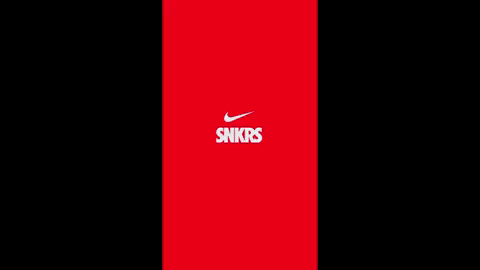
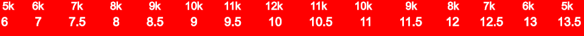

How to set up the SNKRS app
Shoe brands such as
Off-White,
Travis Scott,
and Jordan have just as much more resell than Supreme items. You can download the SNKRS app on
iOS and
Android.
After you have made an account:
- Click on the person icon in your screen's bottom right corner.
- Click on the gear icon in the top right corner of your screen.
- Scroll down to shoe size, click it, and select size 10.
Remember, as we stated in the Determining which shoes to buy paragraph, size 10 comes in the most stock. Since you are buying the shoes to resell them, you will want to maximize your chances of purchasing the shoe. - Keep scrolling and toggle on Touch ID.
Having Touch ID on will save you time when purchasing shoes, and as you know, Hype items and shoes often sell out quickly, so it is best to save as much time as you can. If you have not already, set up your address and card information for SNKRS. Click the person icon in the bottom right of your screen and scroll down to Payment Information. Click "add new payment method" and add a PayPal account or card. Now click the back arrow and click shipping information. On this screen, enter the address you want your shoes to be shipped to. If you have not determined which shoes you will buy, check out the paragraph where we walk you through it on our homepage. 
Types of SNKR Releases
LEO (pronounced el-ie-oh, like the letters): Shoes get released via LEO if they are not Off-White, Travis Scott, or Union LA brand shoes. If a shoe releases via the LEO system, then you have 2-3 minutes to purchase the shoe. After 2-3 minutes, Nike will randomly start selecting entered accounts to purchase the shoe. Nike randomly selects accounts to combat bots, aka automated programs on one's computer that allows them to buy more than one pair of the same shoe on SNKRS.
Here is how to purchase a shoe via an LEO release:
- At 9:59 am EST, open your SNKRS app, click the home icon, click the "Upcoming" tab, and scroll until you see the shoe you want to purchase.
- Click the shoe and wait until 10:00 am. At 10:00 am, click the button with the shoes' price and click "Buy now."
- After you click "Buy now" and confirm your place in line, close the app, swipe up and completely close the app, change IP (turn on/off wifi and turn on/off LTE/4G/5G, etc.), open the SNKRS app again, goto the shoe, and see if you got the shoe (if you got the shoe, you would see "Purchased" instead of "Pending"). This practice makes the SNKRS app deliver results to your phone faster.
If you still see "Pending," restart number 3 until you see "Sold out" or until you see the shoe's price again. If you see the shoe's price again, that means that the size you selected sold out. If the size is sold out, click the price and purchase the size that is the closest to ten, so a size eight instead of size four or a size 11 instead of a size 13. REMEMBER: the sizes with the most stock start at ten and work their way out. If you are still confused, look at the image below. Also, do not worry about buying a size you can not fit because you are not wearing the shoe; you are reselling it. Also, StockX does not accept used items. You can learn more about Stockx on our StockX page. Once you reselect your size, restart step three until the shoe sells out, or you have to pick another size. You will only have to do this for LEO releases, and you will only have to do it for 2-3 minutes. You do not have to do this for other releases because either there will not be enough time to choose another size, or SNKRS will not allow you to pick another size.
The image is a visual representation of a shoe's stock. Notice how size ten has 12 thousand pairs, and all the other sizes incrementally work their way down by a thousand.
DRAW: Shoes get released via DRAW if they are an Off-White, Travis Scott, or Union LA brand shoe. If a shoe releases via the DRAW system, then you have 10 or 30 minutes to purchase the shoe. Some shoes that release via the draw system will give you 10 minutes, and others will give you 30. After 10 or 30 minutes, Nike will randomly start selecting entered accounts to purchase the shoe. Nike randomly selects accounts to combat bots, aka automated programs on one's computer that allows them to buy more than one pair of the same shoe on SNKRS.
Here is how to purchase a shoe via a DRAW release:
- At 9:59 am EST, open your SNKRS app, click the home icon, click the "Upcoming" tab, and scroll until you see the shoe you want to purchase. Click the shoe and wait until 10:00 am.
- At 10:00 am, click the button with the shoe's price on it and click "Buy now." Unlike LEO releases, you do not have to constantly close your app or switch IP's, as the status of a DRAW release gets updated at the end of the draw time ("Purchased" or "Soldout") and to everyone at the same time. Thus all available stock would have been sold, and you would not be able to go and pick another size.
SHOCK DROP: Shoes release via shock drop very rarely, and only if they are super Hyped. You purchase them similarly to DRAW releases, except you get a status on your entry immediately. Shock drops are first come, first serve and sell out in about 30 seconds to 1 minute after the release. There are not scheduled release dates or times for shock drops hence the name shock.
You can find out when a shock drop happens by downloading the Sole Links app and turn on notifications. Sole Links will notify you about all of the releases on the SNKRS app. Unfortunately, the app does not have a way to be notified of just shock drops. You can download the app on: iOS and Android.
EXCLUSIVE ACCESS: Exclusive access releases often happen for super Hyped shoes only. Nike randomly selects accounts to give exclusive access to a shoe. They happen anywhere from three days to the day before a super Hyped release. They always happen at 12 pm EST. The SNKRS app does not notify you of the exclusive access releases, so you will have to be notified of them via the Sole Links app. You purchase them the same way as a shock drop. You can buy a shoe via exclusive access and on its scheduled release date.